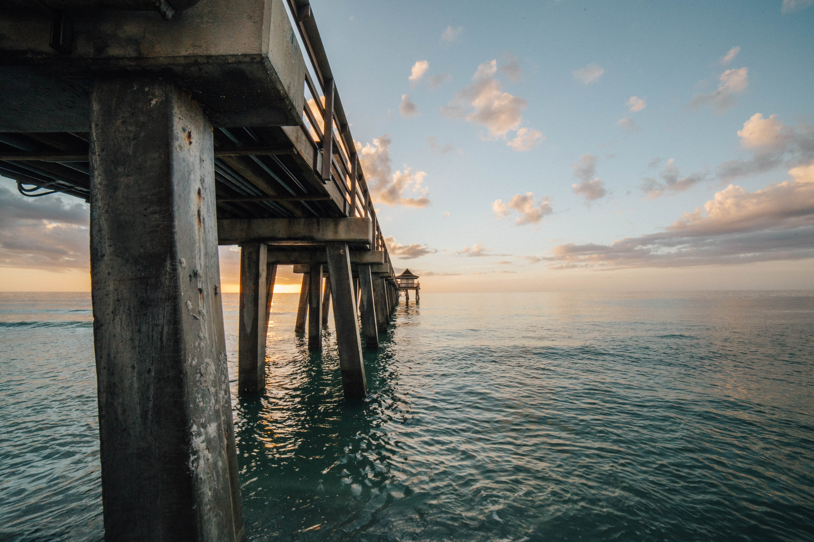

Welcome to Pleasure Island, North Carolina!
What's in the city
Kure Beach Pier
This pier has a distinctive title as the oldest fishing pier on the Atlantic Coastline. First built in 1923 by local L.C. Kure, (whose father originally owned the majority of what is now "Kure" Beach), the initial goal was to create a pier that would be the centerpiece of a grand entertainment complex for Wilmington visitors. Many attractions were built adjacent to the pier, including pavilions, bars,bath houses and cottages, but the pier remained standing long after these other early Kure Beach attractions were gone.
Carolina Beach State Park

Located in New Hanover County 12 miles south of Wilmington, Carolina Beach State Park is home to the Venus flytrap, a unique carnivorous plant. The park is known for habitats like Sugarloaf Dune, a 50-foot dune that once served as a navigational marker for river pilots, as well as three limesink ponds that each feature a unique plant community. The park's marina provides access to the Cape Fear River and the Intracoastal Waterway, making the area popular for boaters and anglers.
Events at Pleasure Island are renowned for great fun, great food, and a great experience of our local culture - all year round! Residents, neighbors, and visitors attend Kure Beach and Carolina Beach events year after year, planning their calendars around big festivals including the Seafood Blues and Jazz Festival, the Beach Music Festival, or the Chowder Cook-Off. Be sure to check out Where to Stay, Where to Eat, Where to Play, and Local Businesses during your visit. Click Here to find MORE activities. Hope to see you at an event soon!